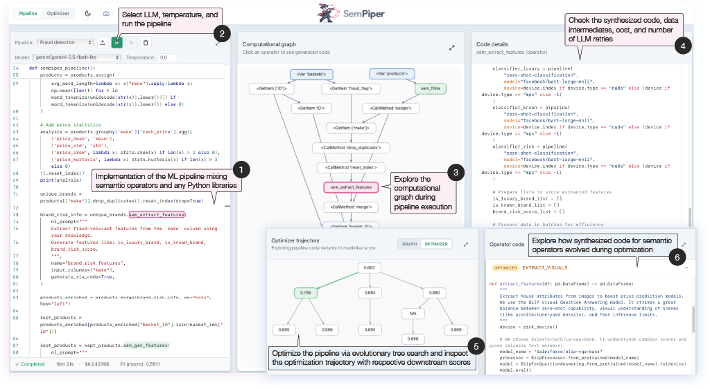

SemPiper: Interactive Code Synthesis for Semantic Operators in ML Pipelines
A web-based demonstration of SemPipes — a programming model that extends tabular ML pipelines
with declarative, LLM-powered semantic data operators, synthesized at training time and optimizable via
evolutionary search.
Machine learning pipelines require extensive data preparation, feature engineering, and integration across
heterogeneous sources. Chat-based LLM assistants provide limited control over pipeline behavior and often
produce code that is difficult to optimize or integrate into production systems.
SemPipes extends Python ML pipelines with declarative, LLM-powered semantic data operators
(SemOps). Developers specify high-level natural language instructions for selected data-centric operations;
the system synthesizes specialized implementations at training time, conditioned on dataset
characteristics and pipeline context. During inference, generated operator code runs without further LLM calls.
SemPiper is the interactive demo that exposes this process: pipeline code, computational graphs,
synthesized operator implementations, and optimization trajectories from evolutionary search — all in a single
web interface.
How Does SemPipes Work?
SemPipes builds on skrub DataOps
pipelines. Pipelines are written in Python with standard libraries (pandas, scikit-learn, etc.) and extended
with semantic operators that delegate selected tasks to LLMs.
1
Define
Write ML pipelines in Python, mixing arbitrary library code with declarative SemOps and natural language instructions.
2
Synthesize
At training time, SemPipes generates custom operator implementations from data samples, prompts, and pipeline context.
3
Optimize
Operator code is refined via LLM-based mutation and tree-structured evolutionary search (e.g. MCTS), using downstream validation performance as fitness.
Web-Based User Interface
SemPiper provides two tabs — Pipeline and Optimizer — for exploring code
synthesis and evolutionary optimization end to end.

1
Pipeline code
Implementation of the ML pipeline mixing semantic operators and any Python libraries.
2
LLM & run
Select LLM, temperature, and run the pipeline.
3
Computational graph
Explore the computational graph during pipeline execution.
4
Synthesized code
Check the synthesized code, data intermediates, cost, and number of LLM retries.
5
Optimization trajectory
Optimize the pipeline via evolutionary tree search and inspect the trajectory with downstream scores.
6
Evolved operators
Explore how synthesized code for semantic operators evolved during optimization.
Semantic Data Operators
SemPipes integrates semantic operators as scikit-learn-style estimators within the skrub computational graph.
Synthesized code varies by operator type — from CPU-based pandas transformations to GPU-backed HuggingFace models.
SemPiper demonstrates three end-to-end ML pipelines, each highlighting different semantic operators and data modalities.
Classification
Fraud detection
Binary classifier on multi-table retail data: shopping baskets with fraud labels and per-basket product records.
Combines NLTK, SciPy, and tree-based models with semantic preprocessing.
sem_fillna — impute missing manufacturers
sem_extract_features — brand risk signals
sem_gen_features — derived price features
sem_agg_features — basket-level aggregates
Classification
Cultural origin prediction
Multimodal museum catalog pipeline on Metropolitan Museum of Art records. Enriches tabular metadata with
spaCy NLP features, then trains an FT-Transformer classifier.
sem_extract_features — structured dates from text
sem_gen_features — temporal and text features
sem_refine — standardize object names
Regression
House price prediction
California real-estate regression combining tabular house attributes, city data, and exterior images.
Uses TableVectorizer and TabPFN, with DuckDB for post-hoc city-level analysis.
# From a parent directory — clone both repos as siblings
git clone https://github.com/OlgaOvcharenko/sempipes-demo.git
git clone https://github.com/deem-data/sempipes.git
cd sempipes-demo
ln -s ../sempipes sempipes
# Install dependencies
poetry install
cd demo/frontend && npm install && cd ../..
# Start backend (:8000) and frontend (:5173)
make run
# Open http://localhost:5173
Set LLM API keys in a .env file at the repo root (e.g.,
GEMINI_API_KEY) before running pipelines with semantic operators.
Citation
If you use SemPiper or SemPipes in your research, please cite the corresponding paper:
SemPiper (VLDB demonstration)
@article{ovcharenko2026sempiper,
title = {{SemPiper}: Interactive Code Synthesis for Semantic Operators in ML Pipelines},
author = {Ovcharenko, Olga and Duarte, Luciano and Schelter, Sebastian},
journal = {Proceedings of the VLDB Endowment},
year = {2026},
url = {https://github.com/OlgaOvcharenko/sempipes-demo},
}
SemPipes (arXiv)
@misc{ovcharenko2026sempipesoptimizablesemantic,
title = {SemPipes -- Optimizable Semantic Data Operators for Tabular Machine Learning Pipelines},
author = {Olga Ovcharenko and Matthias Boehm and Sebastian Schelter},
year = {2026},
eprint = {2602.05134},
archivePrefix = {arXiv},
primaryClass = {cs.LG},
url = {https://arxiv.org/abs/2602.05134},
}